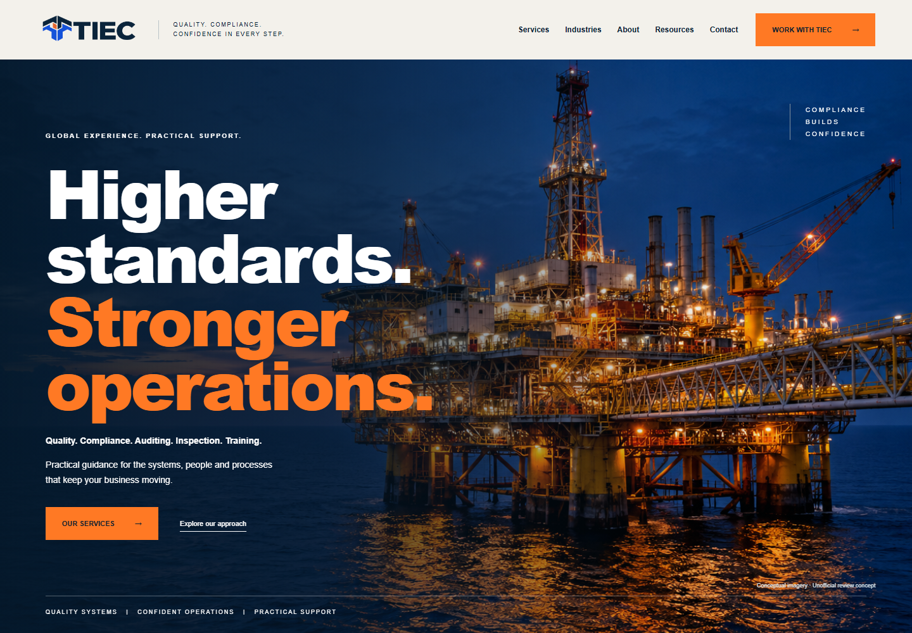
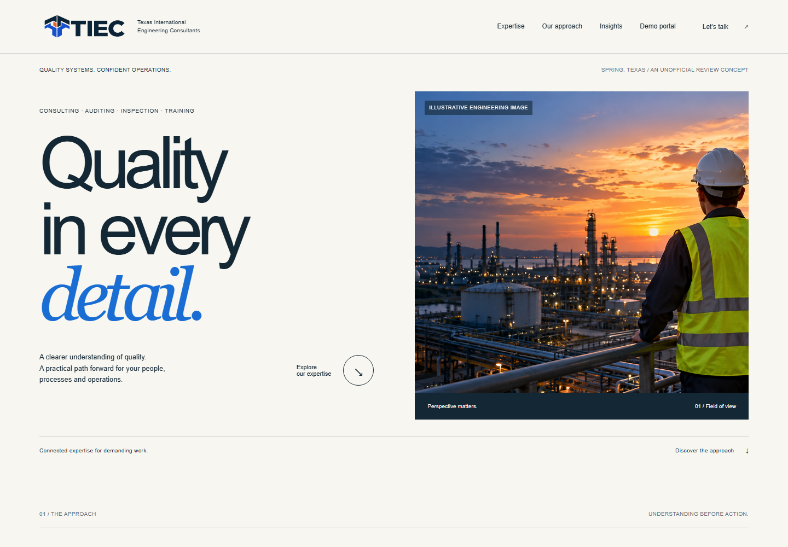
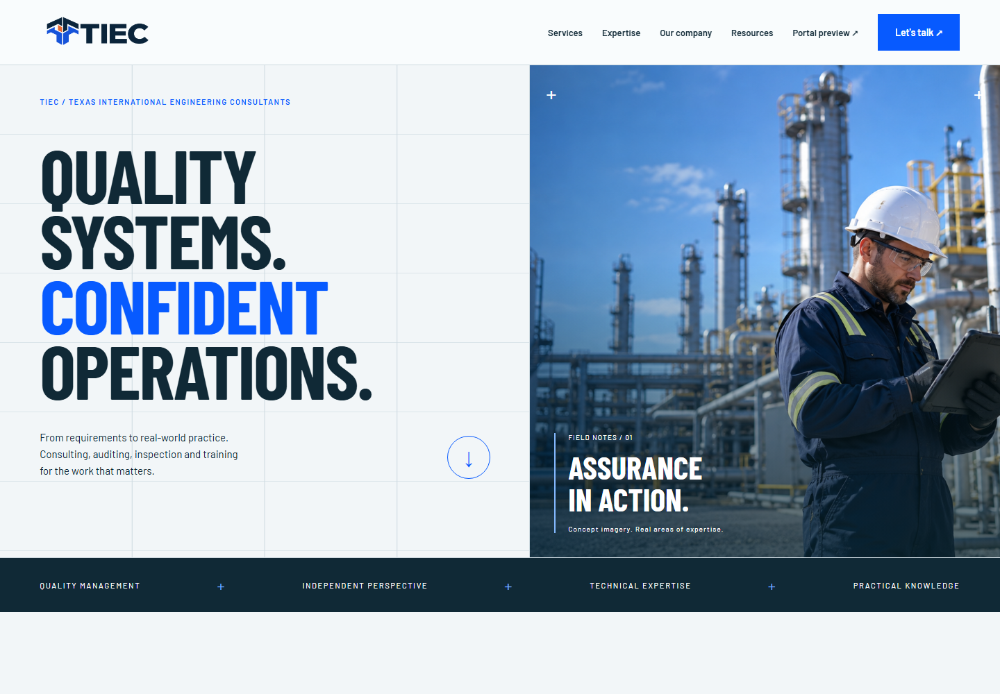
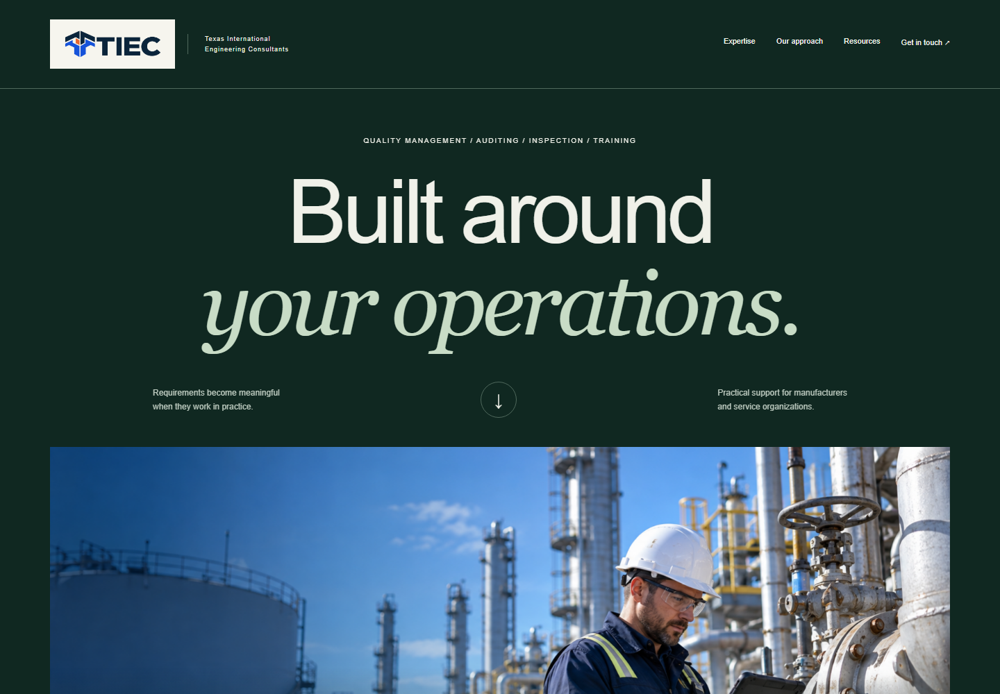

Different perspectives.
One practical purpose.
Explore four website concepts grounded in TIEC’s consulting, auditing, inspection and training services. Each direction adapts a supplied visual reference, with company content corrected to reflect its actual work.

Higher Standards
Confident editorial typography, offshore imagery and a broad service story.
Explore concept →
Quality in Practice
Bright editorial composition, framed imagery, sticky process story and service tabs.
Explore concept →
Confidence at Every Step
Compact service discovery and an inspection-led visual direction.
Explore concept →
Built Around Your Operations
Forest and sage, centered typography, panoramas and a shared service workspace.
Explore concept →A working client workspace.
Explore synthetic projects, audit findings, corrective actions, inspection reports, a QMS document register and training progress. This proposed portal is a demonstration; no actual TIEC integration is implied.
Open private Tailscale portalThe portal requires existing access to Taylor’s Tailscale network. GitHub Pages hosts the public redesign concepts.